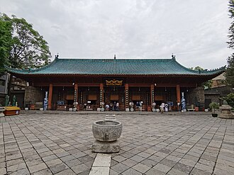

تقديم
La grande mosquée de Xi'an est la plus grande et mieux préservée des premières mosquées de la Chine. Localisée à Xi'an, capitale de la province de Shaanxi, elle est le signe de la très grande ouverture des Tang aux communautés étrangères.
مسجد شّْياَن الكبير (بالصينية:西安大清真寺) أو مسجد زقاق هواجيوه الكبير، من أبرز المساجد القديمة في الصين وأكبرها حجماً، أسس المبنى الأصلي للمسجد في عام 742 ميلادية في عهد سلالة تانغ الحاكمة، أما المبنى الحالي فيرجع لعام 1384 ميلادية في عهد الإمبراطور هونغوو من أسرة مينغ، وذلك بحسب ما ورد في سجلات بلدية شيان (西安府志).
The Great Mosque of Xi'an, also known as the Huajue Xiang Mosque due to its location on 30 Huajue Lane, and is sometimes called the Great Eastern Mosque, is a mosque located in the eastern segments of the Xi'an Muslim Quarter (回民街), Xi'an, in the Shaanxi province of China.
Şian Ulu Camii, Çin'in en eski camisi ve Çin'deki modern öncesi döneme ait camilerden büyüğüdür. Ayrıca, Arap Yarımadası dışında kurulan en eski camilerden olma özelliği ile İslam tarihinde önem taşır.
Masjid Raya Xi'an adalah sebuah masjid raya yang terletak di kota Chang’an yang kini lebih dikenal dengan kota Xi’an, dan menjadi masjid yang pertama berdiri di Tiongkok. Masjid ini berdiri pada abad ke 8 Masehi. Masjid Raya Xi'an, yang terakhir kali di rekonstruksi pada abad ke 18 Masehi, mengikuti arsitektur Tiongkok.
جامع مسجد شیان چین کے صوبہ شانسی کے شہر شیان میں واقع ملک کی قدیم اور مشہور ترین مساجد میں سے ایک ہے۔
Die Moschee zu Xi’an bzw. Große Moschee von Xi’an befindet sich nahe dem Trommelturm (Gulou) in der Huajue-Gasse von Xi’an, Provinz Shaanxi, China. Sie ist eine der ältesten und berühmtesten Moscheen des Landes.
La gran mezquita en Xi'an es una de las mayores mezquitas de toda la República Popular China. Localizada en el distrito musulmán de la minoría hui, ocupa un área de 12 000 m².
La Grande Moschea di Xi'an, situata vicino alla Torre del Tamburo, al numero 3' di via Haujue di Xi'an, nella provincia Shaanxi, Cina. La moschea copre un'area di 12.000 metri quadrati.
De Grote Moskee van Xi'an staat in de Chinese stad Xi'an in de provincie Shaanxi.
西安清真大寺，又称化觉巷清真大寺、东大寺，位于中华人民共和国陕西省西安市回坊化觉巷，是一座仍在使用的伊斯兰教清真寺。寺院占地约1.23公顷，沿东西中轴布置五进院落，礼拜殿位于最西端。
시안다칭전사(중국어: 西安大清真寺, 병음: Xī'ān Dà Qīngzhēnsì 시안 다칭전쓰[*])는 중화인민공화국 산시성 시안시에 소재한 모스크이다. 중국에서 가장 큰 전근대 사원 중 하나로, 이 사원은 당나라 때인 서기 742년에 처음 지어졌지만, 현재의 형태는 주로 명나라 홍무제 통치 기간인 서기 1384년에 지어졌다.
Больша́я сиа́ньская мече́ть — одна из старейших мусульманских мечетей в Сиане и одна из четырёх крупнейших мечетей в Китае.
มัสยิดใหญ่แห่งซีอาน เป็นมัสยิดที่ใหญ่ที่สุดในประเทศจีน โดยเป็นที่ทำการละหมาดในเขตชุมชนมุสลิมในซีอาน และบริเวณนี้เป็นสถานที่ท่องเที่ยวที่โด่งดังอีกด้วย ตัวมัสยิดส่วนใหญ่ถูกสร้างในช่วงต้นของราชวงศ์หมิง โดยมีตึกอยู่กว่า 20 หลังในลานทั้งห้า และมีพื้นที่ 12,000 ตารางเมตร
Ang Dakilang Mosqke ng Xi'an ay ang pinakamalaking moske sa Tsina bago ang makabagong panahon. Ito'y isang aktibong pook-sambahan sa loob ng Xi'an Muslim Quarter. Ang kabuuan ng bakuran nito ay isang sikat na lugar sa mga turista. Ang kalakhan ng mga gusali nito ay itinayo noong naunang bahagi ng Dinastiyang Ming. Ito ngayon ay naglalaman ng halos dalawampung gusali sa loob ng lima nitong patyo at sumusukat ng humigit kumulang 12,000 metro kwadrado.
Marea Moschee din Xi'an este o moschee din orașul Xi'an, China. Aceasta este una dintre cele mai cunoscute și mai bine conservate moschei din țară, fiind o importantă atracție turistică și un exemplu autentic al artei islamice chineze.
قصص وروايات
رواية متداولةمسجد وُلد في عهد أسرة تانغ؟
كانت مدينة شيآن، تشانغآن قديمًا، في القرن الثامن الميلادي أكبر مدينة في العالم ومنطلق طريق الحرير، وكان يسكنها تجار من العرب والفرس. ويُروى، بحسب لوح حجري في المسجد، أن المسجد الكبير أُسّس سنة 742م في عهد أسرة تانغ. ويرى المؤرخون هذا التاريخ غير مؤكَّد، أما المباني الحالية فيعود أغلبها إلى سنة 1392م في عهد أسرة مينغ.
واقعة تاريخيةمسجد على هيئة معبد صيني
ليس للمسجد الكبير في شيآن قبة ولا مئذنة على الطراز العربي، فسقوفه المقوّسة ذات القرميد الأخضر وأروقته الخشبية وحدائقه على الطراز الصيني الخالص. وتتتابع صحونه من الشرق إلى الغرب حتى قاعة الصلاة المتّجهة نحو مكة. وفي الوسط برج مثمّن على هيئة باغودا يُسمّى «جناح تأمّل القلب» (شنغشين لو)، ولعلّه كان يُستعمل مئذنة للأذان. وتمتزج في نقوشه الخطوط العربية والحروف الصينية.
على الخريطة
وثائق وروابط
- Wikipédia — Français
- Wikipédia — العربية
- Wikipédia — English
- Wikipédia — Türkçe
- Wikipédia — Bahasa Indonesia
- Wikipédia — اردو
- Wikipédia — Deutsch
- Wikipédia — Español
- Wikipédia — Italiano
- Wikipédia — Nederlands
- Wikipédia — 中文
- Wikipédia — 日本語
- Wikipédia — 한국어
- Wikipédia — Русский
- Wikipédia — ไทย
- Wikipédia — Filipino
- Wikipédia — Română
- Wikidata — Q820842
البيانات: ويكي بيانات (CC0)، تُحدَّث كل 3 أشهر. السنة هي أقدم تاريخ معروف لبناء المبنى: فإن صار مسجدًا لاحقًا (مثل آيا صوفيا) فهي سنة المبنى الأصلي. الصور: ويكيميديا كومنز، المؤلف والرخصة في صفحة كل صورة.